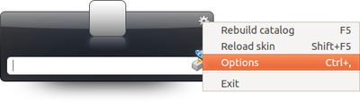

Launchy
Dieser Artikel wurde für die folgenden Ubuntu-Versionen getestet:
Ubuntu 14.04 Trusty Tahr
Zum Verständnis dieses Artikels sind folgende Seiten hilfreich:
Launchy  ist ein Anwendungsstarter, ähnlich wie GNOME Do oder Kupfer. Launchy ist in C++ geschrieben und kann dazu verwendet werden, um Anwendungen zu starten, Dateien oder Ordner zu öffnen, die Lesezeichen des Firefox aufzurufen und vieles andere mehr. Die Entscheidung, welches Programm man einsetzen soll, wird evtl. durch den Hinweis erleichtert, dass Launchy plattformübergreifend ausgelegt ist.
ist ein Anwendungsstarter, ähnlich wie GNOME Do oder Kupfer. Launchy ist in C++ geschrieben und kann dazu verwendet werden, um Anwendungen zu starten, Dateien oder Ordner zu öffnen, die Lesezeichen des Firefox aufzurufen und vieles andere mehr. Die Entscheidung, welches Programm man einsetzen soll, wird evtl. durch den Hinweis erleichtert, dass Launchy plattformübergreifend ausgelegt ist.
Installation¶
Launchy ist in den offiziellen Paketquellen enthalten.
launchy (universe)
launchy-plugins (universe)
launchy-skins (universe)
 mit apturl
mit apturl
Paketliste zum Kopieren:
sudo apt-get install launchy launchy-plugins launchy-skins
sudo aptitude install launchy launchy-plugins launchy-skins
Nach der Installation kann das Programm über
"Anwendungen -> Zubehör -> Launchy"
aufgerufen werden.
Benutzung¶
Das Programm ist, so wie andere Anwendungsstarter, intuitiv zu bedienen. Läuft das Programm im Hintergrund, so lässt es sich mit einer Tastenkombination wieder in den Vordergrund holen. Standard ist dabei Alt + , die Kombination lässt sich aber auch ändern. Man kann einem Programm auch gleich einen Parameter mitteilen. Gibt man zum Beispiel "firefox" in Launchy ein, drückt dann Tab ⇆ und gibt anschließend eine Internetadresse ein, so öffnet der Firefox gleich die passende Internetseite.
Einstellungen¶
Befindet sich Launchy im Vordergrund, kann man die Einstellungenn mit einem Rechtsklick  und anschließend einem Linksklick
und anschließend einem Linksklick  auf "Options" öffnen.
auf "Options" öffnen.

Diese sind auf mehrere Reiter aufgeteilt. Im ersten Reiter "General" lässt sich unter anderem die Tastenkombination zum Aufrufen von Launchy festlegen. Im zweiten Reiter, "Skins", lässt sich das Erscheinungsbild von Launchy den eigenen Bedürfnissen anpassen.
Sitzung¶
Informationen, wie man Launchy nach dem Anmelden automatisch startet, findet man im Artikel Autostart.
Anpassen des Weby-Plugins¶
Ein sehr schönes Plugin von Launchy ist das Weby-Plugin. Mit Hilfe dieses Plugins lassen sich Webseiten mit einem Suchwort (allgemein mit einem Parameter) aufrufen. Dazu ordnet man der gewünschten Website einen Namen zu. Um das zu tun, geht man in den Einstellungen zu Launchy auf den Reiter "Plugins". Hier wählt man links das Plugin "Weby" aus.
Im Fenster tauchen drei Spalten auf. Die erste enthält "Name" (hier sieht man also, welche Namen bereits verwendet werden). Möchte man das Plugin für eine weitere Website nutzen, so klickt man einfach unten auf das "+". Nun kann man in den drei Spalten "Name", "URL" und "Query" festlegen. Auch die vorhanden Einträge lassen sich natürlich verändern. Dadurch ist "Weby" sehr flexibel einsetzbar. Eine Liste mit vielen Beispielen findet man im Artikel Epiphany.
Beispiel Ubuntuusers¶
Die Suche von ubuntuusers.de lässt sich auch mit Launchy verwenden. Dazu trägt man in die linke Spalte ein sinnvolles Stichwort, wie zum Beispiel "uude", ein. In die mittlere Spalte muss man die URL, in diesem Fall also http://ubuntuusers.de, eintragen. Nun muss man noch wissen, wie der Seite der Suchbegriff übergeben wird. %s steht dabei immer für die Eingabe, die man selbst in Launchy macht, also zum Beispiel den Suchbegriff. Für ubuntuusers.de trägt man bei "Query" search/?query=%s ein.
Weitere Beispiele¶
Um den Wetterbericht aufzurufen, ist bereits das Stichwort "Weather" festgelegt. Allerdings gelangt man dabei auf eine Seite, die die Temperaturen in Fahrenheit anzeigt. Abhilfe schafft das Ändern der "URL" auf http://wetter.com und des "Query" auf suche?search=%s. Natürlich kann man hierbei auch "Name" verändern.
Auch für Wikipedia besteht schon ein Eintrag. Hier bietet es sich unter Umständen an, die "URL" von http://en.wikipedia.org/ auf http://de.wikipedia.org/ zu ändern, um die deutsche Wikipedia zu durchsuchen.
 Programmübersicht
Programmübersicht- Erstellt mit Inyoka
-
 2004 – 2017 ubuntuusers.de • Einige Rechte vorbehalten
2004 – 2017 ubuntuusers.de • Einige Rechte vorbehalten
Lizenz • Kontakt • Datenschutz • Impressum • Serverstatus -
Serverhousing gespendet von